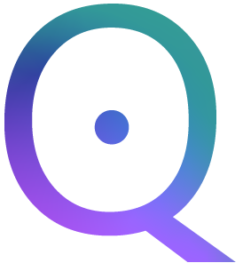

Portfolio
Every engagement is a commitment. Here's what that commitment delivers.
Flagship Case Study · CFO + COO Integrated

Qera Marketing was a multi-entity digital marketing agency with the revenue potential to scale fast — but neither the financial infrastructure nor the organizational architecture to get there. Multiple entities, inconsistent reporting, no centralized financial visibility, and operational systems that couldn't keep pace with growth.
Both the CFO and COO functions were embedded simultaneously. Matt rebuilt the financial model and deployed the proprietary BI platform across all entities. Kylie redesigned the organizational structure, operational workflows, and team systems. Financial infrastructure and organizational architecture were built in parallel — by design.
18 mo
To multi-million scale
Multi-Entity
Full BI coverage
CFO + COO
Dual embedded
CFO + COO Integrated · Single Entity
CivicHire is a pre-revenue recruiting platform focused on first responders — police, fire, EMS. As a privately held company in the early stages, CivicHire needed both financial architecture and operational infrastructure built from the ground up to support its growth trajectory in a mission-critical sector where reliability is non-negotiable.
Both the CFO and COO functions were embedded to build the company's foundation. Matt established the financial model and forecasting framework for a pre-revenue business. Kylie designed and implemented the operational infrastructure — process standardization, delivery systems, and scalable workflows. Both functions running in coordination from day one.
Pre-Revenue
Private company
CFO + COO
Dual embedded
Single Entity
Full coverage
Financial Clarity · CFO
Residential property management company. We implemented financial reporting systems and operational processes to support sustainable growth and improve property-level visibility.
Financial reporting infrastructure and operational dashboards for property-level performance visibility. Process improvements to support accurate, timely decision-making.